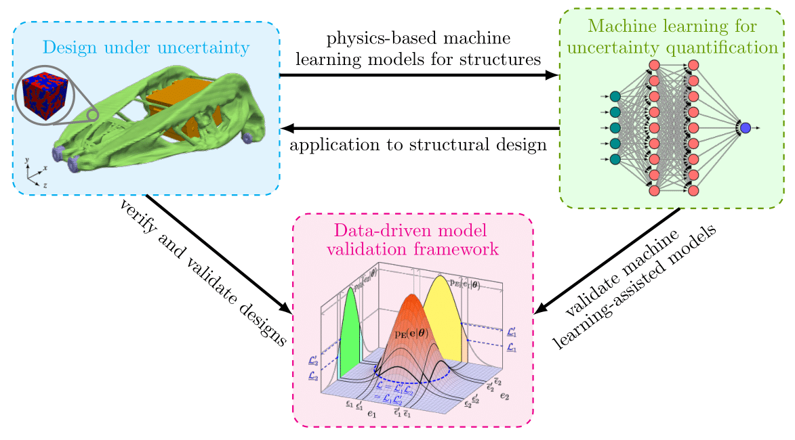

Welcome to the website of UQLID (pronounced as "Euclid") Lab at Northern Arizona University. The main research goal of the UQLID Lab is to establish new probabilistic data-driven paradigms to efficiently develop and validate models using machine learning tools that can be used for the design of multi-scale multi-functional structural systems and materials.
Dr. Subhayan De is an Assistant Professor in the Department of Mechanical Engineering. He leads the UQLID Lab at NAU. Google Scholar ResearchGate
Graduate Researchers
Maryam Maghazeh
Maryam joined NAU in Spring 2023. Prior to joining NAU, she completed her Bachelor's and Master's degrees from the Iranian University of Science and Technology in 2018 and 2021, respectively, during which she worked on computational fluid dynamics. Her research at NAU focuses on "Topology Optimization for Fracture Resistance."
Aayush Dulal
Aayush will join NAU in Spring 2024. Prior to joining NAU, he completed his Bachelor in Mechanical Engineering from the Tribhuvan University in Nepal.
Undergraduate Researchers
Shaojie Wang
Shaojie joined the Department of Mechanical Engineering at NAU in Spring 2022, participating in the Sino-US Double Degree Program. His research at the UQLID Lab focuses on "Transfer Learning of Bayesian Neural Networks for modeling car suspensions."
Grace Morris
Grace is a recipient of the NASA Space Grant for Fall 2023 - Spring 2024. Her research at the UQLID Lab focuses on the "Development of Machine Learning Assisted Surrogate Models for Complex Space Structures."
Research Overview:
The UQLID Lab performs research on an unique combination of Scientific Machine Learning (SciML), Design Optimization,
and Uncertainty Quantification.

Figure: Research activities at UQLID Lab.
Projects:
Recently, machine learning (ML)-assisted models, such as neural networks, capable of describing some of the complex physical phenomena with good accuracy and reasonable computational cost are increasingly used in engineering applications. For exercises that involve many realizations of the engineering systems (e.g., uncertainty quantification, design under uncertainty), these ML-assisted models can be exploited here to develop physics-based surrogate models that are easy to evaluate once trained but at the same time accurate.However, these networks require a large dataset to train.
In this research thrust, efficient training of neural networks using smaller datasets for applications to engineering problems are explored.
Our contributions are:
Development of bi-fidelity Deep Operator Networks (BF-DeepONets) to model complex engineering systems (paper#1, paper#2).
Applications:
Windfarm
Car Suspension System
Development of transfer learning strategies for uncertainty quantification of complex engineering systems (paper). [codes]
Application:
Li-ion Battery
Training of neural networks using l1-regularization and bi-fidelity data (paper).
Application:
Lid-driven Cavity Flow
Uncertainty quantification of locally nonlinear dynamical systems using neural networks (paper).
Prediction of Ultrasonic Guided Wave Propagation in Solid-fluid and their Interface under Uncertainty using Machine Learning (paper).
Application of the proposed strategies to multi-physics engineering prblems.
The robust design of engineering systems requires the inclusion of uncertainties in the optimization process.
The aim of this research thrust is to develop efficient design methodology and algorithms that can reduce the computational cost of robust and reliability-based optimization while considering uncertainty across multiple scales.
Topology Optimization under Uncertainty (TOuU)
In topology optimization (TO), we try to think about optimally distributing materials inside the structure to satisfy some performance criteria.
However, in the presence of uncertainty, achieving a meaningful optimized design is computationally burdensome as the number of optimization variables is large in TO.
In our recent works, we showed that the topology optimization under uncertainty for engineering design could be efficiently performed using multiple variants of the stochastic gradient descent algorithms (including two novel bi-fidelity algorithms), famously employed in the training of neural networks, but tailored for TO applications.
Our contributions are:
Development of a stochastic gradient approach for TOuU (paper). [codes]
Development of bi-fidelity stochastic gradient descent algorithms with proven linear convergence (paper).
Applications: Topology optimization under micro-scale uncertainty, reliability-based topology optimization (paper#1,paper#2).
Figure: A typical example used in topology optimization (Two-fold symmetry is used in the movie). Figure: A bracket is designed to support a payload box under microstructural uncertainty. Figure: 3D printer @UQLID Lab.
Optimal Design of Passive Structural Control Devices
In the recent past, many types of structures have been equipped with control devices to achieve some performance criteria (such as drift or acceleration mitigation).
We developed computationally efficient design procedure of passive control devices for complex structures using NVIE approach.
The proposed method has the following characteristics (paper):
Realizable computation time for large and complex structures.
Trade-off between accuracy and speedup exists.
Uncertainty in the existing structure can be incorporated.
Application to a benchmark cable-stayed bridge.
Figure: Efficient optimal design of passive control devices for a cable-stayed bridge.
Probabilistic Model Validation Framework
We developed a computationally efficient model validation framework applicable to models from vast domains based on philosophy advanced by the famous statistician George P. Box: ``Essentially, all models are wrong, but some are useful.''
This framework integrates the principle of falsification into the model selection process within a Bayesian framework utilizing measurement datasets from physical experiments to mitigate the weaknesses of existing individual validation schemes.
Our contributions are:
Introduction of false discovery rate and likelihood-bound in model falsification (paper). [codes]
A probabilistic machine learning framework is proposed for efficient validation of models (paper).
Applications to structural, turbulence, and material modeling problems.
Figure: Proposed probabilistic model validation framework has been applied to a full-scale four-story building tested at Japan's E-Defense Lab.
Efficient Bayesian Model Selection
Bayesian model selection chooses, based on measured data, using Bayes’ theorem, suitable mathematical models from a set of possible models.
In structural analysis, linear models are often used to facilitate design and analysis, though they do not always accurately reproduce actual structural responses.
When the models also require the inclusion of nonlinearity to improve accuracy, the computation time required for response simulation increases significantly.
To address this issue, our contributions are (paper):
Development of a computationally efficient method using Nonlinear Volterra type Integral Equations (NVIE) to model selection problems.
Incorporating dynamic time history data for nonlinear models as the modal parameters changes with time in nonlinear models.
Using NVIE approach the speedup is upto three orders of magnitude compared to traditional nonlinear solvers.
The approach is demonstrated using a 100 DOF building structure subjected to earthquake excitation and a 1623 DOF three-dimensional building subjected to wind excitation.
Figure: A 100 DOF building with hysteretic isolation layer is used in this paper. Figure: A 1623 DOF (right) building with three tuned-mass dampers on its roof is used in paper.
Publications:
Journals
Hassanaly, M., Weddle, P., King, R.N., De, S., Doostan A., Randall, C.R., Dufek, E., and, Smith K. "PINN surrogate of Li-ion battery models for parametric inference. Part I: Implementation and multi-fidelity hierarchies for the single-particle model", Journal TBD (in review).
Hassanaly, M., Weddle, P., King, R.N., De, S., Doostan A., Randall, C.R., Dufek, E., and, Smith K. "PINN surrogate of Li-ion battery models for parametric inference. Part II: Regularization and application of the pseudo-2D model", Journal TBD (in review).
De, S., Kamalzare, M., Johnson, E.A. and , Wojtkiewicz S.F., "Efficient Optimal Design of Passive Structural Control Devices for Complex Structures", ASCE Engineering Mechanics Institute Conference, August 2014 . McMaster University, ON, Canada.
De, S., Kamalzare, M., Johnson, E.A. and , Wojtkiewicz S.F., "Computationally-Efficient Bayesian Model Selection for Structural Systems with Local Nonlinearities", ASCE Engineering Mechanics Institute Conference, August 2014, McMaster University, ON, Canada.
De, S., Johnson, E.A. and , Wojtkiewicz S.F., "Fast Bayesian Model Selection with Application to Large Locally-Nonlinear Dynamic Systems ", 6th International Conference on Advances in Experimental Structural Engineering, 11th International Workshop on Advanced Smart Materials and Smart Structures Technology, August 1-2, 2015, University of Illinois, Urbana-Champaign, USA.
De, S., Brewick, P.T., Johnson, E.A. and, Wojtkiewicz S.F. "Exploration of Error Rate Criteria to Decide Bounds for Model Falsification'', ASCE Engineering Mechanics Institute Conference, May, 2016, Vanderbilt University, Nashville, TN, USA.
De, S., Johnson, E.A. and, Wojtkiewicz S.F. "Efficient Uncertainty Quantification for Locally Nonlinear Dynamical Systems'', ASCE Engineering Mechanics Institute Conference, 2017, University of California, San Diego, CA, USA.
De, S., Brewick, P.T., Johnson, E.A. and, Wojtkiewicz S.F. "Model Falsification in a Bayesian Framework'', ASCE Engineering Mechanics Institute Conference, 2017, University of California, San Diego, CA, USA.
De, S., Yu, T., Johnson, E.A. and, Wojtkiewicz S.F. "Model Validation of a 4 Story Base Isolated Building using Seismic Shake-Table Experiments'', 11th U.S.~National Conference on Earthquake Engineering, 2018, Los Angeles, CA, USA.
De, S., Johnson, E.A. and, Wojtkiewicz S.F. "Uncertainty Quantification of Locally
Nonlinear Dynamical Systems using Polynomial Chaos Expansion", SIAM Conference on
Uncertainty Quantification (UQ18), 2018, Hyatt Regency Orange County, Garden Grove, CA,
USA.
De, S., Dasgupta, A., Johnson, E.A. and, Wojtkiewicz S.F. "Probabilistic Model Validation
of Large-Scale Systems using Reduced Order Models", SIAM Conference on
Uncertainty Quantification (UQ18), 2018, Hyatt Regency Orange County, Garden Grove, CA,
USA.
De, S., Yu, T., Dasgupta, A., Johnson, E.A. and, Wojtkiewicz S.F. "Probabilistic Model
Validation of the Isolation layer of a Full-Scale Four-Story Base-Isolated Building", ASCE
Engineering Mechanics Institute Conference, , 2018, Massachusetts Institute of Technology, Cambridge, MA,
USA.
Dasgupta A., De, S., Yu, T., Johnson, E.A. and, Wojtkiewicz S.F. "Probabilistic validation of material models", ASCE Engineering Mechanics Institute Conference, , 2018, Massachusetts Institute of Technology, Cambridge, MA,
USA.
De, S., Maute, K. and, Doostan, A. "Topology Optimization under Uncertainty using
Stochastic Gradients", Topology Optimization Roundtable,, 2019, Albuquerque Marriot, Albuquerque, NM,
USA.
De, S., Maute, K. and, Doostan, A. "Optimization under Uncertainty Using Stochastic
Gradients", 15th U.S. Congress on Computational Mechanics, 2019, Austin, TX, USA.
De, S., Johnson, E.A. and, Wojtkiewicz S.F. "Efficient Evidence Estimation for Bayesian
Model Selection", ASCE Engineering Mechanics Institute Conference, , 2019, California Institute
of Technology, Pasadena, CA, USA.
Glaws, A., King, R, Reynolds, M., Doostan, A. and, De, S. "Physics-informed Deep Learning for Multi-fidelity Uncertainty Quantification", Workshop on Research Challenges and
Opportunities at the interface of Machine Learning and Uncertainty Quantification, 2019, Los Angeles, CA, USA.
De, S., Britton, J., Reynolds, M. and, Doostan, A. "Neural Network Training using Bi-fidelity Data for Uncertainty Quantification", SIAM Conference on Uncertainty Quantification (UQ20),,2020, Munich, Germany (cancelled due to COVID-19).
De, S., Britton, J., Reynolds, M. and, Doostan, A. "Ultrasonic guided wave-based structural health monitoring system in fluid-solid and their interface", 10th European Workshop on Structural Health Monitoring (EWSHM 2020),,2020, Palermo, Italy (postponed due to COVID-19).
De, S. and, Doostan, A. "Multi-fidelity methods for deep neural network surrogates", SIAM Conference on Computational Science and Engineering (CSE21),,2021, Fort Worth, Texas, USA.
De, S., Maute, K. and, Doostan, A. "Topology Optimization in the Presence of Microscale Uncertainty", ASCE Engineering Mechanics Institute Conference,,2021, New York, USA.
De, S., Maute, K. and, Doostan, A. "Use of Stochastic Gradient Descent for Topology Optimization under Reliability Constraints", 16th U.S. Congress on Computational Mechanics,,2021, Chicago, USA.
De, S., Maute, K. and, Doostan, A. "Microscale Uncertainty in Macroscale Topology Optimization", 14th World Congress of Structural and Multidisciplinary Optimization (WCSMO-14),,2021, Boulder, USA.
Maute, K., De, S. and, Doostan, A. "Shape and Material Optimization of Problems with Dynamically Evolving Interfaces", 14th World Congress of Structural and Multidisciplinary Optimization (WCSMO-14),,2021, Boulder, USA.
De, S. and, Doostan, A. "Bi-fidelity Training of Neural Networks Using l1-Regularization", SIAM Conference on Uncertainty Quantification (UQ22),,2022, Atlanta, USA.
Department of Aerospace Engineering Sciences, University of Colorado, Boulder, "Machine Learning Techniques for Modeling and Design under Uncertainty", November, 2021.
Sandia National Laboratory, "Multi-fidelity Methods for Deep Neural Network Surrogates", May, 2021.
Palo Alto Research Center, "Design under Uncertainty using Stochastic Gradients", April, 2021.
Faculty of Mechanical Engineering, Helmut Schmidt University, "Dealing with Uncertainty in Modeling of Structures: Applications to Model Validation and Design Optimization", April, 2020. (canceled due to COVID-19 outbreak).
Faculty of Architecture, Civil Engineering and Environmental Sciences, Technische Universitat Braunschweig, "Data-driven Modeling, Validation, and Design under Uncertainty", July, 2020 (Webinar).
Department of Aerospace Engineering Sciences, University of Colorado, Boulder, "Incorporating Uncertainty into Modeling: Applications to Model Validation and Design Optimization", November, 2019.
Department of Civil Engineering, Indian Institute of Technology, Kanpur, "Applications of
Probabilistic Hybrid Model Validation Framework to Structural Problems", January, 2018.
Department of Civil Engineering, Indian Institute of Science, Bangalore, "Probabilistic Hybrid Model Validation Framework", December, 2017.
Department of Civil and Environmental Engineering, University of Southern California, "Efficient Bayesian Model Selection for Locally Nonlinear Systems incorporating Dynamic Measurements", March, 2015.
Subhayan De
UQLID Lab
Department of Mechanical Engineering
Northern Arizona University
Flagstaff, AZ 86011
USA
Email: Subhayan.De@nau.edu